Fri 01 May 2020, tags: ErlangN2OTutorial
Re-posting from 2014-09-16
"N2O — The Most Powerful Erlang Web Framework"
As a first step, we will show how to install N2O and create a simple application.
Environment
N2O is an Erlang framework so let's install Erlang first (if you haven't done it yet).
In Linux, we will use Erlang Solutions repository to get the latest Erlang version.
wget http://packages.erlang-solutions.com/erlang-solutions_1.0_all.deb sudo dpkg -i erlang-solutions_1.0_all.deb
$ sudo apt-get install erlang-base erlang-dev
Or in Mac OS X
$ sudo port install erlang
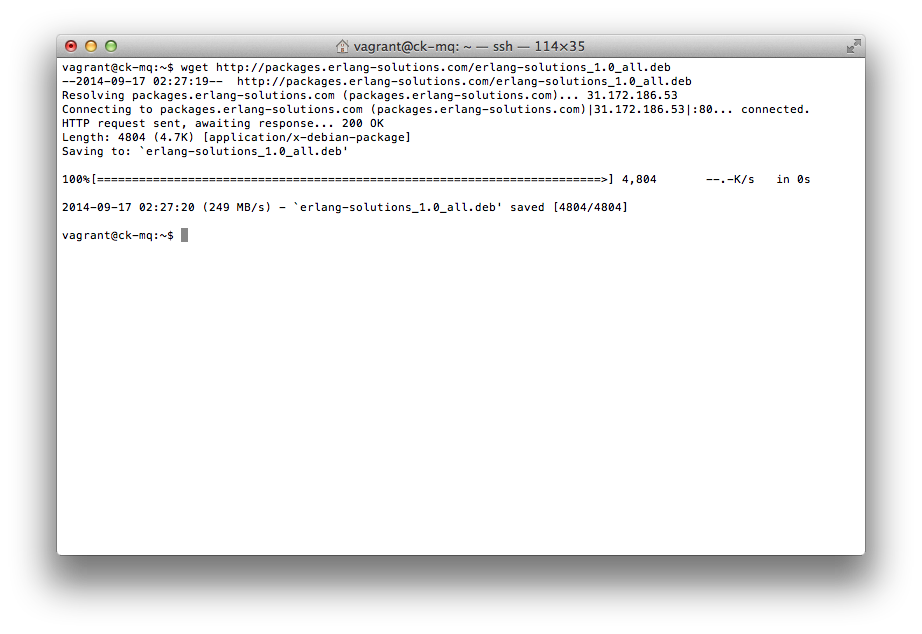
Application
Once Erlang installed, let's start building our first N2O application! On this step we will prepare the environment.
The way how we are going to run and deploy that you could probably have seen in the official documentation is slightly different - instead generation Erlang releases we will just run the app from the terminal for faster and easier development/testing process.
mkdir example # create directory for project cd example mkdir apps # apps directory will contain our applications mkdir apps/web # 'web' is the name of our application mkdir deps # deps directory will be used for saving dependent libraries touch rebar.config # rebar config curl -O https://raw.githubusercontent.com/wiki/rebar/rebar/rebar # download rebar chmod a+x rebar # make rebar executable
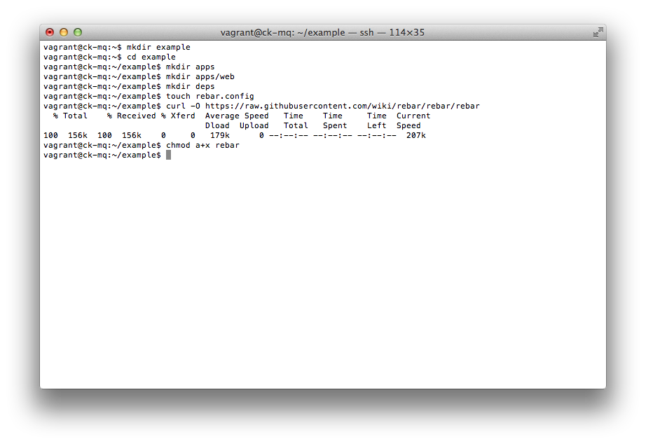
Then configure rebar.
vim rebar.config
{deps_dir, ["deps"]}.
{lib_dirs, ["apps", "deps"]}.
{sub_dirs, ["apps",
"deps",
"apps/web"]}.
{deps, [
{n2o, ".*", {git, "git://github.com/5HT/n2o.git", {tag, "1.9.0"}}}
]}.
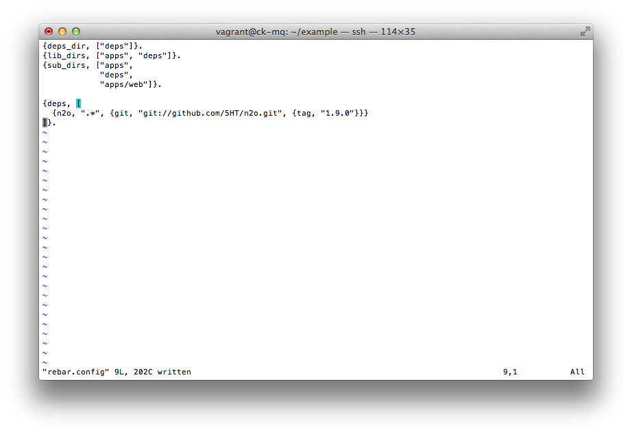
Well, rebar is configured. Let's pull dependencies and compile them
./rebar get-deps compile
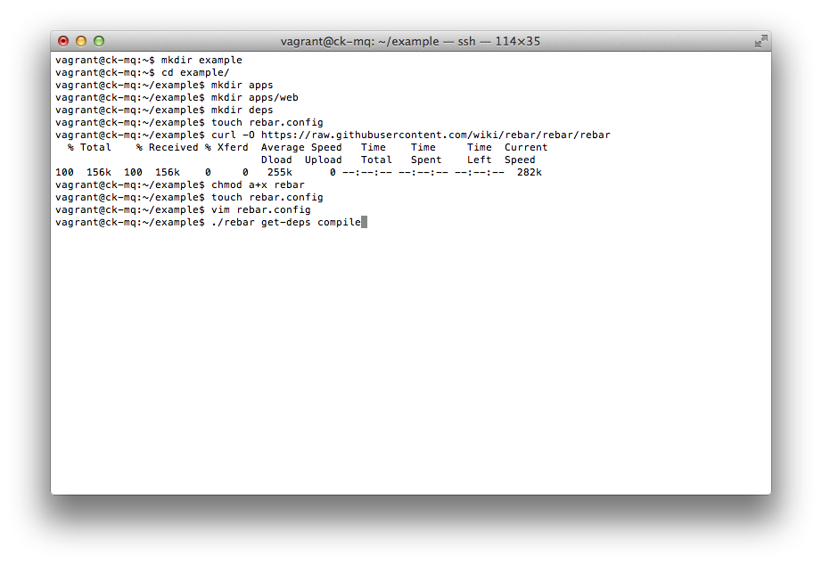
Done. Now let's use some rebar magic and generate our first Erlang/OTP application in 'apps/web' directory.
cd apps/web ../../rebar create-app appid=web
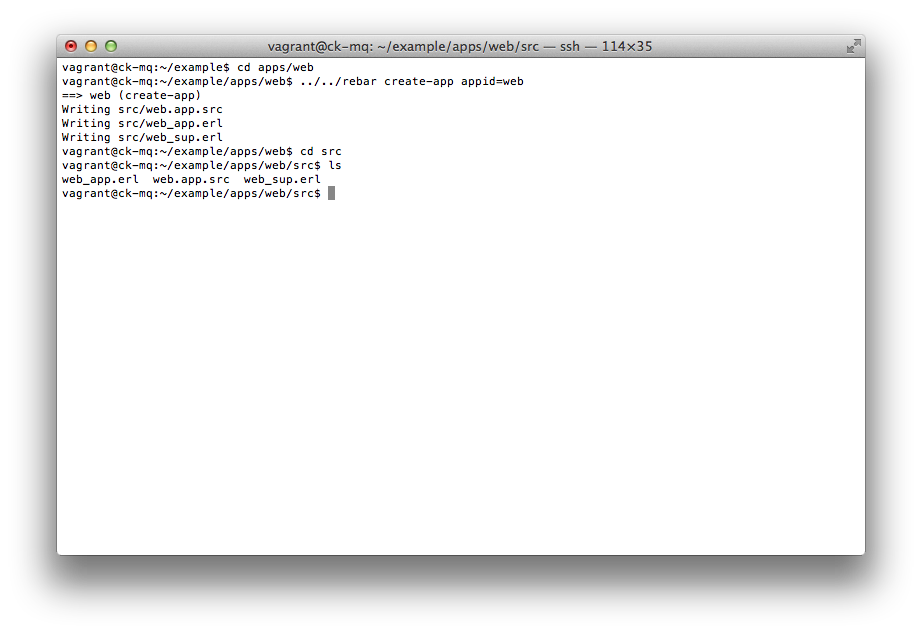
Code
A standard N2O app contains a set of OTP application files like *.app.src, *_app.erl and _sup.erl. These files will be generated using rebar. For our example, we have to create 2 additional files:
- routes.erl - routes list
- index.erl - actual view
As the first step, we will update web.app.src file and add 'n2o' to the applications list.
vim web.app.src
{application, web,
[
{description, ""},
{vsn, "1"},
{registered, []},
{applications, [
kernel,
stdlib,
n2o
]},
{mod, { web_app, []}},
{env, []}
]}.
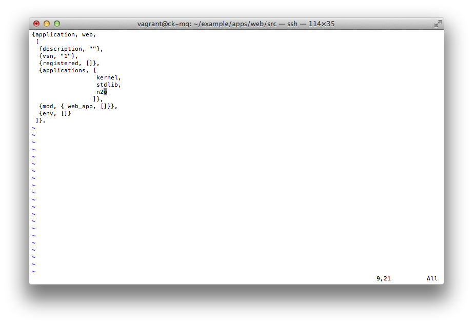
After that let's change the web_app.erl file and add start/0 function for easier application from console which is useful in the development process
vim web_app.erl
-module(web_app).
-behaviour(application).
%% Application callbacks
-export([start/2, stop/1, start/0]).
%% ===================================================================
%% Application callbacks
%% ===================================================================
start() ->
application:ensure_all_started(web), % start all dependent applications
application:set_env(n2o, route, routes), % setup router module
application:start(web). % start application
start(_StartType, _StartArgs) ->
web_sup:start_link().
stop(_State) ->
ok.
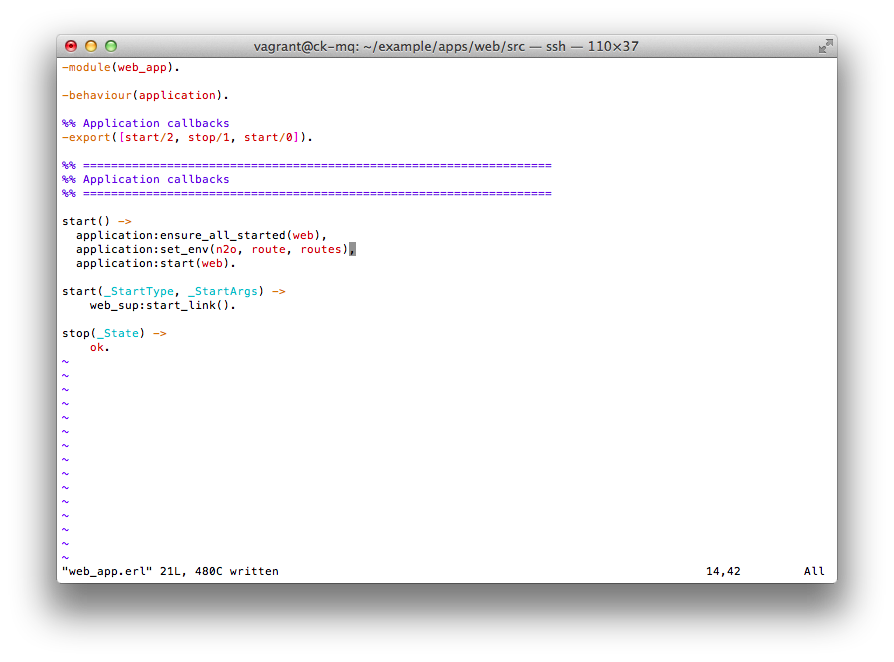
Then go to the web_sup.erl file and change init/1 function. We will add cowboy server initialization and define handlers in rules function.
vim web_sup.erl
init([]) ->
{ok, _} = cowboy:start_http(http, 3, [{port, 9002}],
[{env, [{dispatch, rules()}]}]),
{ok, { {one_for_one, 5, 10}, []} }.
rules() ->
cowboy_router:compile([
{'_', [ %% handle all domains
{'_', n2o_cowboy, []} %% handle all urls
]}
]).
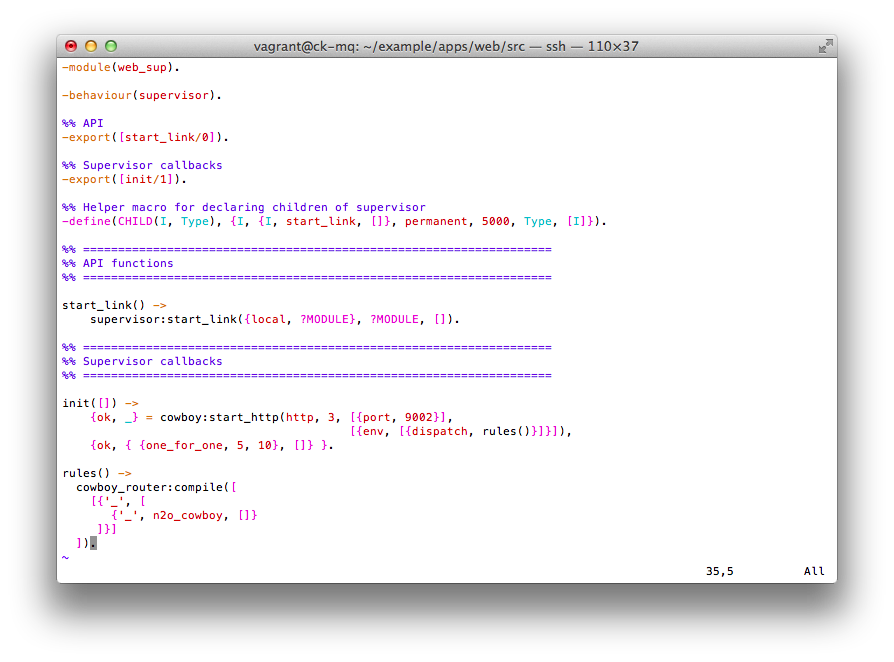
As a next step we should create the routes.erl file where we will configure routes
vim routes.erl
-module(routes).
-include_lib("n2o/include/wf.hrl").
-export([init/2, finish/2]).
finish(State, Ctx) ->
{ok, State, Ctx}.
init(State, Ctx) ->
Path = wf:path(Ctx#cx.req),
{ok, State, Ctx#cx{path=Path,module=route_prefix(Path)}}.
route_prefix(P) -> route(P).
route(_) -> index. % always return `index` handler for any url.
Now when our app is almost ready. We should create last and the most important view file - for our case, so let's create a simple view that will render "Hello N2O!" into the browser.
vim index.erl
-module(index).
-compile(export_all).
-include_lib("n2o/include/wf.hrl").
main() -> <<"Hello N2O!">>. % main/0 is default function that N2O is calling
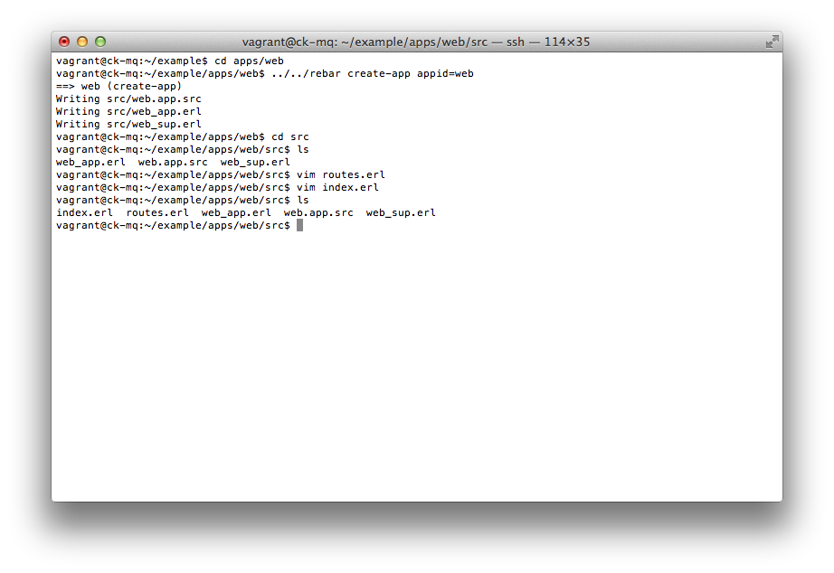
Production
That's it! Let's start the app
cd ../../../ % return into root of our project ./rebar compile % compile apps erl -name "web@$(hostname)" -pa deps/*/ebin -pa apps/*/ebin -boot start_sasl -s web_app start
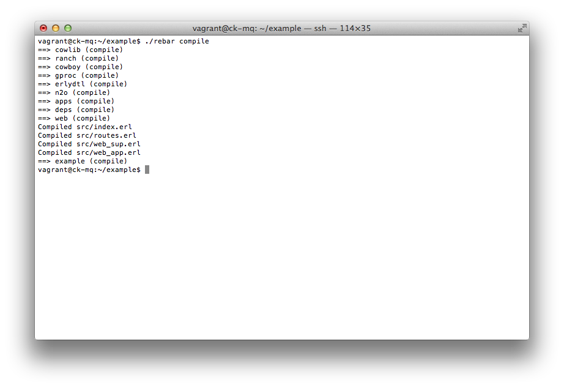
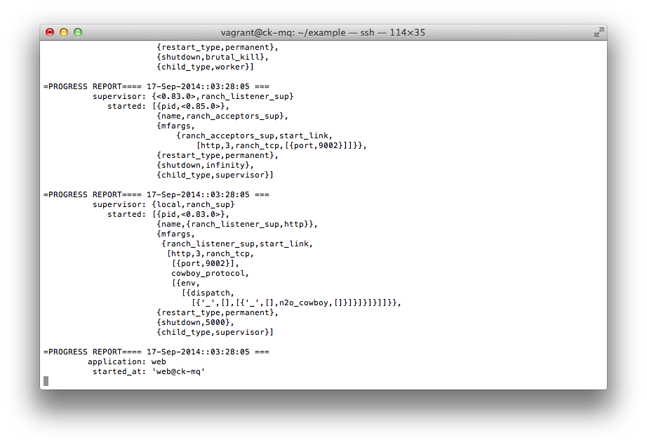
Open in browser
http://localhost:9002
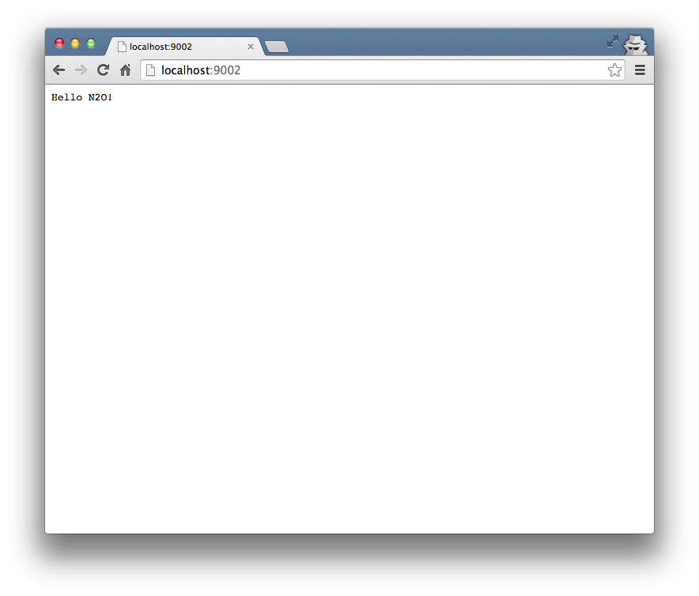
Comments !